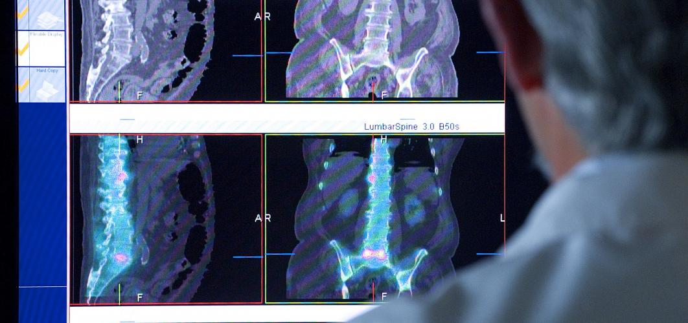
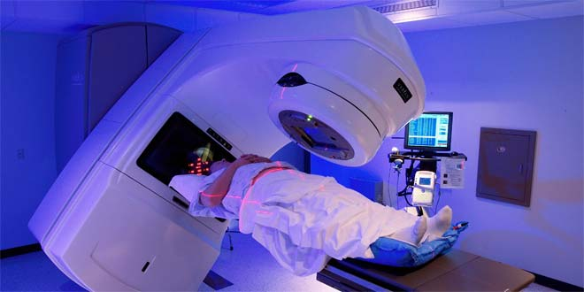

Medical
Nuclear medicine and radiology are the whole of medical techniques that involve radiation or radioactivity to diagnose, treat and prevent disease. While radiology has been used for close to a century, “nuclear medicine” began approximately 50 years ago. Today, about one-third of all procedures used in modern hospitals involve radiation or radioactivity. These procedures are among the best and most effective life-saving tools available, they are safe and painless and don’t require anesthesia, and they are helpful to a broad span of medical specialties, from pediatrics to cardiology to psychiatry.
Inventor
George de Hevesy
Year of invention
Mid-1920s
Main technologies or sub-processes
- Diagnosis
- Therapy


Interventional nuclear medicine
Radionuclide therapy can be used to treat conditions such as hyperthyroidism, thyroid cancer, and blood disorders.
Isotopes used in medicine
Many radioisotopes are made in nuclear reactors, some in cyclotrons. Generally neutron-rich ones and those resulting from nuclear fission need to be made in reactors; neutron-depleted ones are made in cyclotrons. There are about 40 activation product radioisotopes and five fission product ones made in reactors.